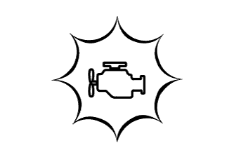

СИСТЕМА ECD (для моделей без DPF) > СИСТЕМА ДИАГНОСТИКИ |
| EURO-OBD |
|  |
| M-OBD (НЕЕВРОПЕЙСКИЙ СТАНДАРТ) |
| НОРМАЛЬНЫЙ РЕЖИМ И РЕЖИМ АКТИВНОЙ ДИАГНОСТИКИ |
| ЛОГИКА ДИАГНОСТИРОВАНИЯ ЗА 2 ПОЕЗДКИ |
| ДАННЫЕ ФИКСИРОВАННОГО НАБОРА ПАРАМЕТРОВ |
| НАПРЯЖЕНИЕ АККУМУЛЯТОРНОЙ БАТАРЕИ |
| MIL |
Контрольная лампа MIL загорается, когда зажигание включается (IG), а двигатель не запускается.
После запуска двигателя контрольная лампа MIL выключается. Если лампа MIL продолжает гореть, это означает, что система диагностики обнаружила неисправность или нарушение работы в системе ECD.
| ПРОВЕРКА ГОТОВНОСТИ |
Подсоедините портативный диагностический прибор к DLC3.
Включите зажигание (IG).
Включите портативный диагностический прибор.
Сбросьте коды DTC (Нажмите здесь).
Выполните поездку в проверочном режиме для запуска проверки DTC.
Войдите в следующие меню: Powertrain / Engine and ECT / Utility / All Readiness.
Введите коды DTC для проверки.
Проверьте результат проверки DTC.
| Информация на дисплее прибора | Описание |
| NORMAL |
|
| ABNORMAL |
|
| INCOMPLETE |
|
| UNKNOWN |
|